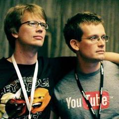
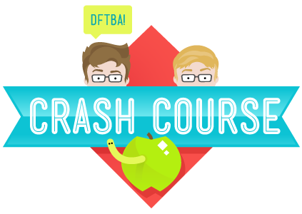
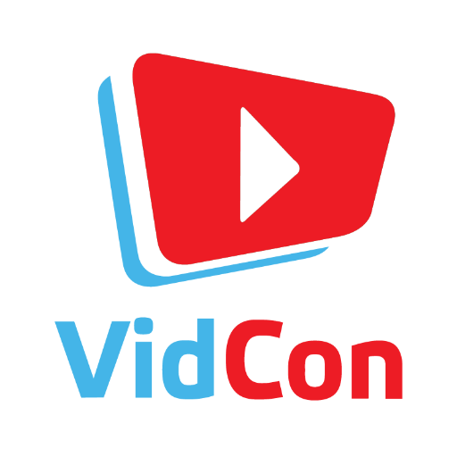

John Green's personal pride are his children, but his greatest professional accomplishment is Vlogbrothers. Vlogbrothers is co-hosted by Hank, John's brother. This Youtube channel started back in 2007 when Hank and John decided to communicate exclusively via video blog. They make many different types of videos. Their content ranges from informative, this is where their educational channel Crash Course stemmed from, to hilarious. As Youtube grew throughout the years, John and Hank decided to start a video blog conference. This is how VidCon started in 2010. Currently, the Vlogbrothers have around 3 million subscribers and are gaining more daily. Hank and John aspire to use their platform to create good in the world. As you can tell, John Green's online work is expansive and entertaining as well as educational.
The Vlogbrothers started in early 2007. The original idea can be credited to Hank Green, who thought that video communication between the brothers would strengthen their bond. However, as time progressed and they started gaining a following, their brotherhood slowly grew into a community. Currently, Vlogbrothers has around 3 million subscribers. The Green brothers have named their fans "Nerdfighters". This term came about due to the 'nerdy' nature of the brothers and in turn the community itself. They are collectively fighting against what Hank and John refer to as "world suck". World suck is a general term for unjust things in this world. What started off as a video blog between brothers, escalated into one of the largest Youtube channels. As Hank and John watched Youtube grow and progress, they decided to start a video conference. Vidcon aspired to bring that vastly different but wholly interesting Youtube community, into the real world. Vlogbrothers truly transformed John and Hank's life, and the Youtube community. As far as professional achievements are concerned, Vlogbrothers is definitely worth celebrating.
John and Hank Green have been huge advocators for free education since the beginning. In 2012 they launched their educational Youtube channel, Crash Course. Crash Course is a channel co-produced by Hank and John, which features a variety of different courses taught by a range of hosts. These courses range from psychology to literature, and even computer studies. Crash Course is partnered with PBS Digital Studios and is financially supported by patron subscribers who donate money to keep Crash Course free for everyone. This youtube channel is a valuable asset to students and teachers alike.
As Youtube started expanding, the Green brothers wanted to bring it into the physical world, and thus Vidcon began in 2010. To this day, VidCon is still the world's largest conference in regards to video blog. Hundreds of thousands attend every year on several continents. During this conference, business meetings are held, friendships are made, and it is the ideal platform for creator and fan interaction. VidCon has only become more successful and enjoyable as time progressed. This conference truly changed the way people viewed online video.
